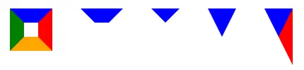

前端基础篇之 CSS 世界（转载）
前言
本人平时学习及收集内容，欢迎参入一起讨论。
内容
- 基本概念
- 盒模型四大金刚
- 好基友
line-height和vertical-align - 流的破坏
- 层叠规则
- 文本控制
- 元素的显示与隐藏
- 弹性布局
- 网格布局
一、基本概念
- 流
- 块级元素和内联元素
- width: auto 和 height: auto
- 外在盒子和内在盒子
1.1 流
**“流”又叫文档流，是 css 的一种基本定位和布局机制。**流是 html 的一种抽象概念，暗喻这种排列布局方式好像水流一样自然自动。“流体布局”是 html 默认的布局机制，如你写的 html 不用 css，默认自上而下（块级元素如div）从左到右（内联元素如span）堆砌的布局方式。
1.2 块级元素和内联元素
块级元素是指单独撑满一行的元素，如 div、ul、li、table、p、h1 等元素。这些元素的 display 值默认是 block、table、list-item 等。
内联元素又叫行内元素，指只占据它对应标签的边框所包含的空间的元素，这些元素如果父元素宽度足够则并排在一行显示的，如 span、a、em、i、img、td 等。这些元素的 display 值默认是 inline、inline-block、inline-table、table-cell 等。
实际开发中，我们经常把 display 计算值为 inline inline-block inline-table table-cell 的元素叫做内联元素，而把 display 计算值为 block 的元素叫做块级元素。
1.3 width: auto 和 height: auto
width、height的默认值都是auto。
对于块级元素，流体布局之下width:auto自适应撑满父元素宽度。这里的撑满并不同width:100%的固定宽度，而是像水一样能够根据margin不同而自适应父元素的宽度。
对于内联元素，width:auto则呈现出包裹性，即由子元素的宽度决定。
无论内联元素还是块级元素，height:auto都是呈现包裹性，即高度由子级元素撑开。
注意父元素height: auto会导致子元素height: 100%百分比失效。
css 的属性非常有意思，正常流下，如果块级元素的width是个固定值，margin是auto，则 margin会撑满剩下的空间；如果margin是固定值，width 是 auto，则 width 会撑满剩下的空间。这就是流体布局的根本所在。
1.4 外在盒子和内在盒子
外在盒子是决定元素排列方式的盒子，即决定盒子具有块级特性还是内联特性的盒子。外在盒子负责结构布局。
内在盒子是决定元素内部一些忏悔是否生效的盒子。内在盒子负责内容显示。
如display:inline-table;外在盒子就是inline，内在盒子就是table。外在盒子决定了元素要像内联元素一样并排在一排显示，内在盒子则决定了元素可以设置宽高、垂直方向的 margin 等属性。如下图
右侧的 table 和左侧的文字在一行排列（外在盒子 inline 的表现特征），同时有拥有自定义宽度 111px（内在盒子 table 可以设置宽高）。
1.5 css 权重和超越!important
| 权重值 | 选择器 |
|---|---|
| 1,0,0,0 | 内联样式：style="" |
| 0,1,0,0 | ID 选择器：#idName{...} |
| 0,0,1,0 | 类、伪类、属性选择器：.className{...} / :hover{...} / [type="text"] ={...} |
| 0,0,0,1 | 标签、伪元素选择器：div{...} / :after{...} |
| 0,0,0,0 |
当两个权值进行比较的时候，是从高到低逐级等级位上的权重值来进行比较的，而不 1000 个数 + 100 个数 + 10 个数 + 1 个数 的总和来进行比较的，换句话说，低等级的选择器个数再多也不会超过高等级的选择器的优先级的。
正确规则：
- 先从高等级进行比较，高等级相同时，再比较低等级的，以此类推；
- 完全相同的话，就采用 后者优先 原则；
在 css 中，!important 的权重相当的高。如果出现了!important，则不管权重如何都取有!important 的属性值。但是宽高有例外情况，由于宽高会被 max-width/min-width 覆盖，所以!important 会失效。
1.6 盒模型（盒尺寸）
元素的内在盒子是由margin box、border box、padding box、content box组成的，这四个盒子由外到内构成了盒模型。
IE 模型：box-sizing:border-box此模式下，元素的宽度计算为border+padding+content的宽度总和。
W3C 标准模型：box-sizing:content-box此模式下，元素的宽度计算为content的宽度。
由于content-box在计算宽度的时候不包含broder padding很烦人，而且又是默认值，业内一般采用以下代码重置样式：
:root {
box-sizing: border-box;
}
* {
box-sizing: inherit;
}
2
3
4
5
6
7
1.7 内联盒模型
内联元素是指外在盒子是内联盒子的元素。从表现来说，内联元素的典型特征就是可以和文字在一行显示。文字也是内联元素。图片、按钮、输入框、下拉框等替换元素也是内联元素。内联盒模型是指内联元素包含的几个盒子，理解记忆下面的几个概念对 css 的深入学习极其重要。
- 内容区域：本质上就是字符盒子。在浏览器中，文字选中状态的背景色就是内容区域。
- 内联盒子：内联盒子就是指元素的外在盒子是内联的，会和其他内联盒子排成一行。
- 行框盒子：由内联元素组成的每一行都是一个行框盒子。如果一行里面没有内联元素如一个空的
div标签，则不会形成行框盒子。行框盒子由一个个内联盒子组成，如果换行，那就是两个行框盒子。比如一个包含了很多字符的换行的的p标签，每一行都存在一个行框盒子。值得注意的是，如果给元素设置display: inline-block，则创建了一个独立的行框盒子。line-height是作用在行框盒子上的，并最终决定高度。 - 包含盒子：就是包含块。多行文字组成一个包含块，一个包含块有若干个行框盒子。
- 幽灵空白节点：内联元素的每个行框盒子前面有一个“空白节点”，这个“空白节点”不占据任何宽度，无法选中获取，但是又实实在在存在，表现就如同文本节点一样（本文中大量例子会用字母 x 模拟幽灵空白节点）。
1.8 替换元素
替换元素是指内容可以替换的元素，实际上就是content box可以被替换的元素。如存在src=""属性的<img><audio><iframe>元素和可以输入文本的<input><select><textarea>元素等。
所有替换元素都是内联元素，默认display属性是inline或inline-block(除了input[type="hidden"]默认display:none;)。
替换元素有自己默认的样式、尺寸（根据浏览器不同而不同），而且其vertical-align属性默认是bottom（非替换元素默认值是baseline）。
1.9 css 的继承机制
参见
二、盒模型四大金刚
- content
- padding
- margin
- border
2.1 content
对于非替换元素如div，其content就是 div 内部的元素。而对于替换元素，其content就是可替换部分的内容。
CSS 中的content属性主要用于伪元素:before/:after中，除了做字体库或少写个 div，对于一般开发来说并无卵用。
2.2 padding
padding是四大金刚中最稳定的了，少见有什么异常。尽管如此还是有些需要注意的地方：
- 大部分情况下我们会将元素重置为
box-sizing:border-box，宽高的计算是包含了padding的，给人一种padding也是content box一部分的感觉，好像line-height属性也作用于padding上。但实际上，元素真正的内容的宽高只是content box的宽高，而line-height属性是不作用于padding的。

padding不可为负值，但是可以为百分比值。为百分比时水平和垂直方向的padding都是相对于父级元素宽度计算的。将一个div设为padding:100%就能得到一个正方形，padding:10% 50%可以得到一个宽高比 5:1 的矩形。
body {
width: 400px;
}
.box {
padding: 10% 50%;
}
2
3
4
5
6
7

padding配合background-clip属性，可以制作一些特殊形状：
/*三道杠*/
.icon1 {
box-sizing: border-box;
display: inline-block;
width: 12px;
height: 10px;
padding: 2px 0;
border-top: 2px solid currentColor;
border-bottom: 2px solid currentColor;
background: currentColor; /*注意如果此处背景颜色属性用缩写的话，需要放到其他背景属性的前面，否则会覆盖前面的属性值（此处为background-clip）为默认值*/
background-clip: content-box;
}
/*双层圆点*/
.icon2 {
display: inline-block;
width: 12px;
height: 12px;
padding: 2px;
border: 2px solid currentColor;
border-radius: 50%;
background-color: currentColor;
background-clip: content-box;
}
2
3
4
5
6
7
8
9
10
11
12
13
14
15
16
17
18
19
20
21
22
23
预览如下：

2.3 margin
- 作为外边距，
margin属性并不会参与盒子宽度的计算，但通过设置margin为负值，却能改变元素水平方向的尺寸：
<div>asdf</div>
<style>
div {
margin: 0 -100px;
}
</style>
2
3
4
5
6
此时div元素的宽度是比父级元素的宽度大200px的。但是这种情况咐发生元素是流布局的时候，即元素width是默认的auto并且可以撑满一行的时候。如果元素设定了宽度，或者元素设置了float:left/position:absolute这样的属性改变了流体布局，那么margin为负也无法改变元素的宽度了。
- 块级元素的垂直方向会发生
margin合并，存在以下三种场景：
- 相邻兄弟元素之间
margin合并； - 父元素
margin-top和子元素margin-top，父元素margin-bottom和子元素margin-bottom; - 空块元素自身的
margin-top和margin-bottom合并
要阻止margin合并，可以使用以下方法
- 把元素放到
bfc中； - 设置
border或padding阻隔margin; - 用内联元素阻隔；
- 给父元素设定高度
margin的百分比值跟padding一样，
<div class="box">
<div></div>
</div>
<style>
.box{
overflow: hidden;
background-color: lightblue;
}
.box > div{
margin: 50%;
}
</style>
2
3
4
5
6
7
8
9
10
11
12
margin: auto能在块级元素设定宽高之后自动填充剩余宽高。
2.4 border
border主要作用是做边框。border-style属性的值有none/solid/dashed/dotted/double等，效果如下：

border-width属性的默认值是3px，值得注意的是，border-color默认是跟随字体的颜色，相当于默认设置了border-color: currentColor一样。
border另一广受欢迎的功能就是图形构建，特别是做应用广泛的三角形，其原理可看下图
div{
float:left;
margin:20px;
}
div:nth-child(1){
width:20px;
height:20px;
border:20px solid;
border-color:blue red orange green;
}
div:nth-child(2){
width: 20px;
height: 20px;
border: 20px solid;
border-color: blue transparent transparent transparent;
}
div:nth-child(3){
border: 20px solid;
border-color: blue transparent transparent transparent;
}
div:nth-child(4){
border-style: solid;
border-width: 40px 20px;
border-color: blue transparent transparent transparent;
}
div:nth-child(5){
border-style: solid;
border-width: 40px 20px;
border-color: blue red transparent transparent;
}
2
3
4
5
6
7
8
9
10
11
12
13
14
15
16
17
18
19
20
21
22
23
24
25
26
27
28
29
30

其实就是将其他三个边框的颜色设置透明，并把宽高设为 0。是通过调整边框宽度和颜色调整三角形的形状，把最后一个图的红色改为蓝色，则是一个直角三解开了。
三、好基友line-height和vertical-align
- 字母 x 的角色
- line-height
- vertical-align
3.1 字母 x 的角色
在内联元素的垂直方向对齐中，基线是最为重要的概念。line-height
3.2 line-height
属性值：
normal：默认值normal
3.3 vertical-align
属性值：
- 线类：如
baseline(默认值)、top、middle、bottom（baseline） - 文本类：
- 上标下标：
- 数值：
- 百分比：
四、流的破坏
现在 UI 框架横行的年代，我们的 css 写的越来越少了。这对于很多老鸟来说是件好事，但是对于初入前端的小白却未必。因为写的少了，就少了很多练手和总结的机会，对于很多样式理解就不透彻。本章介绍的float、position 和 BFC 对于前端页面布局非常重要，希望诸位看官们静下心来仔细研读
float属性的特性
4.1 float属性的特性
五、层叠规则
参考：结构与层叠
六、文本控制
七、元素的显示与隐藏
八、弹性布局
弹性布局是指 display: flex 或 display: inline-flex 的布局。注意，设为弹性布局以后，子元素的 float、clear、vertical-align 属性都会失效。
参考：flex 学习
九、网格布局
参考：grid 布局
参考资料
联系作者
平凡世界，贵在坚持。